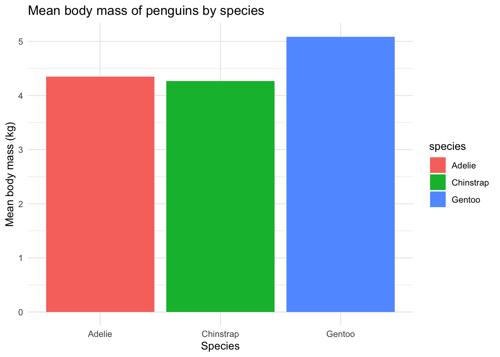
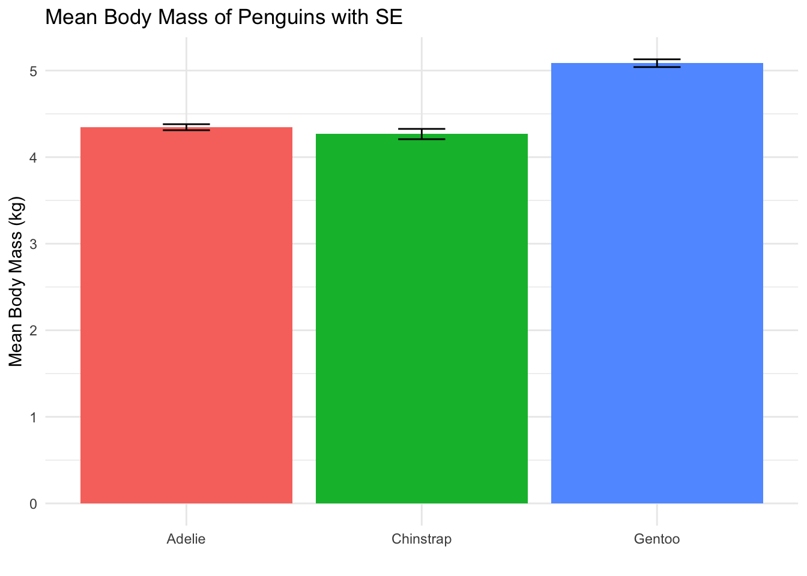
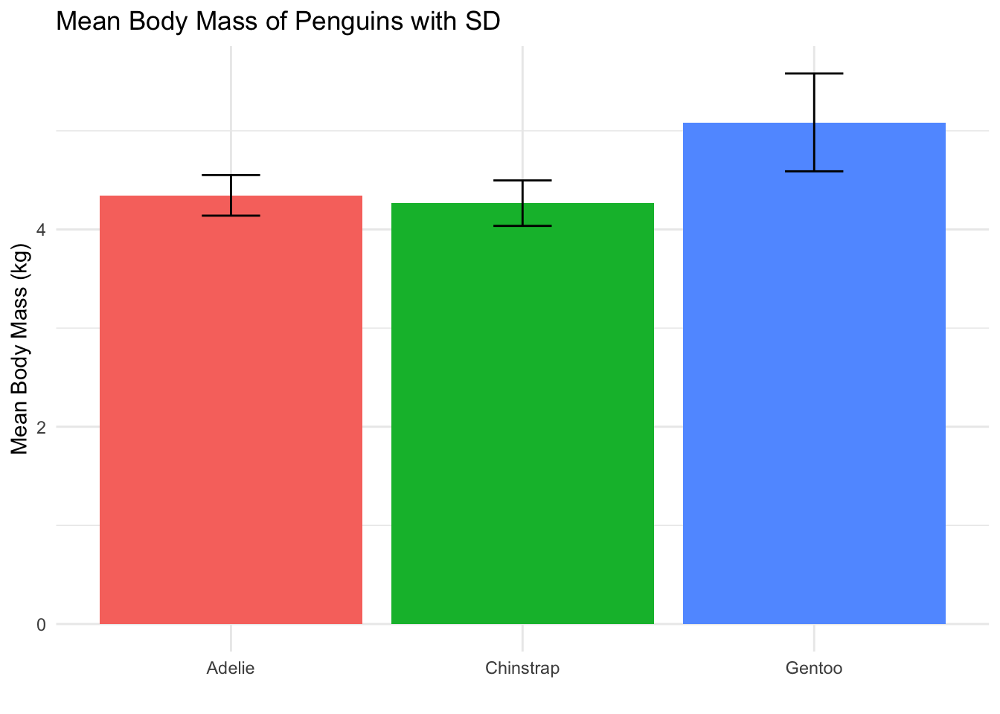

Above we did each manipulation step by step. But eh beauty of dplyr and using teh pipe is puttign it altogether in one line of code.
Allows us to avoid making a new object for each step.
# Select only relevant columns# Filter to include only penguins heavier than 4000 g# Create a new column converting grams to kilograms# Group data by species# Summarise the grouped datapenguins |>select(species, island, flipper_length_mm, body_mass_g) |>filter(body_mass_g >4000) |>mutate(body_mass_kg = body_mass_g /1000) |>group_by(species) |>summarise(mean_flipper =mean(flipper_length_mm, na.rm =TRUE),mean_mass_kg =mean(body_mass_kg, na.rm =TRUE),n =n() )
# A tibble: 3 × 4
species mean_flipper mean_mass_kg n
<fct> <dbl> <dbl> <int>
1 Adelie 195. 4.35 35
2 Chinstrap 203. 4.27 15
3 Gentoo 217. 5.09 122
Lastly, lets visualise it!
library(ggplot2)penguins_summary <- penguins |>select(species, island, flipper_length_mm, body_mass_g) |>filter(body_mass_g >4000) |>mutate(body_mass_kg = body_mass_g /1000) |>group_by(species) |>summarise(mean_flipper =mean(flipper_length_mm, na.rm =TRUE),mean_mass_kg =mean(body_mass_kg, na.rm =TRUE),n =n() )ggplot(penguins_summary, aes(x = species, y = mean_mass_kg, fill = species)) +geom_col() +labs(title ="Mean body mass of penguins by species",y ="Mean body mass (kg)", x ="Species") +theme_minimal()

Add error bars
Our bar plot looks ok, but we don’t have any error bars. Lets do some more data manipulation to get standard deviation and standard error.
Note, we need to use our original penguins dataset here, as we are goign to calucate the….
ggplot(penguins_summary_stats, aes(x = species, y = mean_mass_kg, fill = species)) +geom_col() +geom_errorbar(aes(ymin = mean_mass_kg - se_mass_kg,ymax = mean_mass_kg + se_mass_kg),width =0.2) +# width of error bar capslabs(title ="Mean Body Mass of Penguins with SE",y ="Mean Body Mass (kg)", x ="") +theme_minimal() +theme(legend.position ="none")

Plot with SD instead
ggplot(penguins_summary_stats, aes(x = species, y = mean_mass_kg, fill = species)) +geom_col() +geom_errorbar(aes(ymin = mean_mass_kg - sd_mass_kg,ymax = mean_mass_kg + sd_mass_kg),width =0.2) +# width of error bar capslabs(title ="Mean Body Mass of Penguins with SD",y ="Mean Body Mass (kg)", x ="") +theme_minimal() +theme(legend.position ="none")

Summary of key dplyr functions
select() = choose columns (variables)
filter() = choose rows (observations) that meet a condition
mutate() = create or modify columns
group_by() = define groups for summarising
summarise() = calculate summary statistics per group